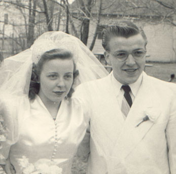

Eileen Beyer
19?? - (Before Sept. 30, 2004)
Eileen Neubauer was born to Selma and Harold Neubauer. She married Russell Beyer and together they had three boys: Jeffrey, James, and Larry.

Eileen and Russell on their wedding day.
Parents:
Selma Anderson
1904 - 2004
Harold Neubauer ???? - 1966
Offspring:
Jeffrey Beyer ???? - ?
James Beyer ???? - ?
Larry Beyer ???? - ?
References:
1. Neal Wogsland
2. Mary Dell Wogsland
Last changed on 2 October 2004 by
Bradley James Wogsland
.